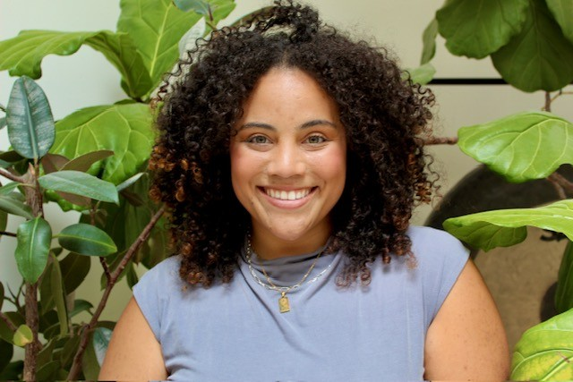
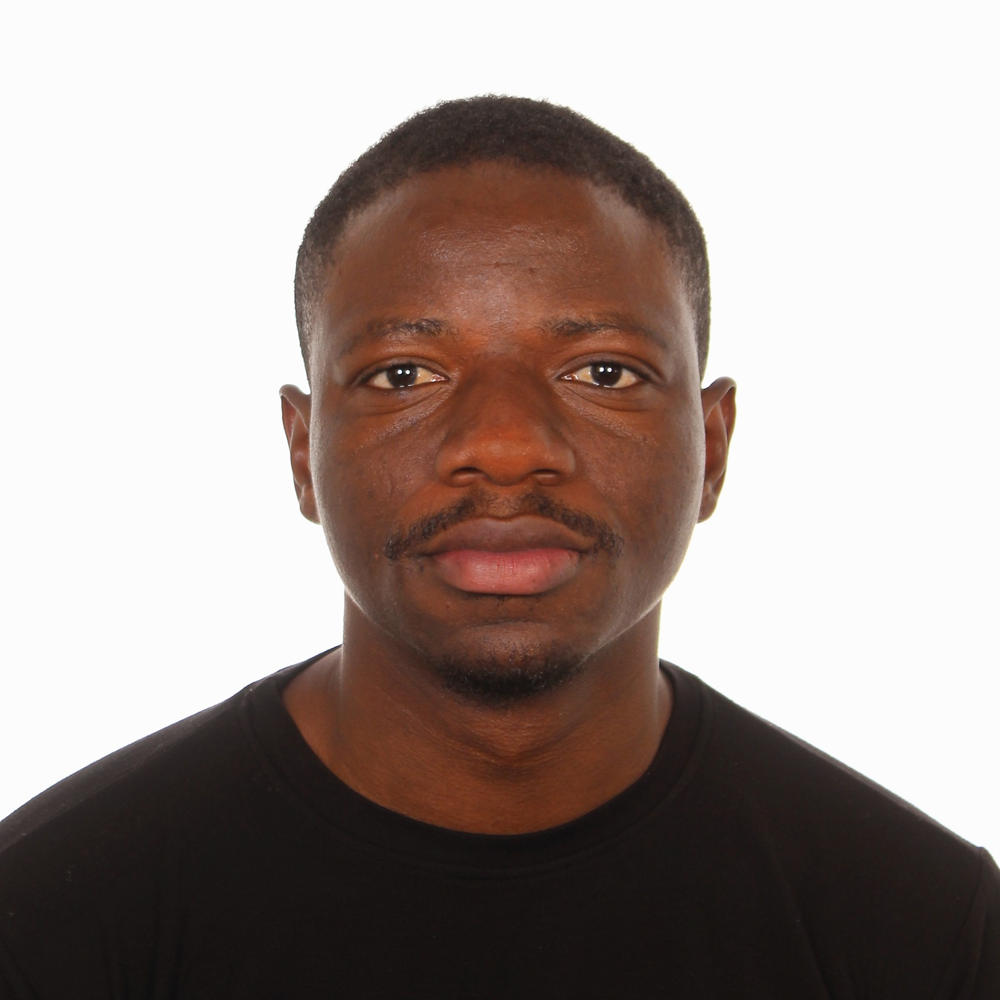
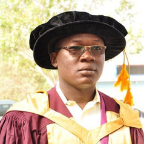

The lab.
Dr. Charity Nyelele
Assistant Professor, Dept. of Environmental Sciences
Education
- BA, University of Zimbabwe
- MA, University of Zimbabwe
- PhD, State University of New York
Courses Taught
- EVSC 3100 — Fall
- EVSC 4100/7100 — Fall
- ETP 2030, co-taught with P. Freedman and S. Cushman — Spring
Email: hbt3mb@virginia.edu

Ayia Lindquist
MS Student, Environmental Sciences
Born on the island of Ay-Ay (Saint Croix) in the Caribbean and raised along the shores of the Chesapeake Bay in Maryland, Ayia's lifelong connection to these ecosystems connected her with climate change from an early age. She received her Bachelors in Geography at San Diego State University, where she worked with local communities to understand and address environmental injustices across San Diego. Since graduating, she's worked across policy, non-profits, restoration, and the federal government. At NASA, she works directly with communities to co-develop research and applications of Earth Observations to support ecological, social, and data resilience. Her research focuses on how to integrate socio-ecological systems, justice principles, and remote sensing data to inform land management decision making on a changing planet.
Email: cwn3az@virginia.edu
Pinky Rani Sarkar
PhD Student, Environmental Sciences
Pinky is a PhD Student whose research is centered on Urban Forestry, Ecosystem Services, and Forest Management. Her research focuses on forest ecology and ecosystem services using geospatial science, remote sensing, and ecological modeling. Through integrating geospatial and ecological data within decision-support frameworks, she aims to better understand forest dynamics, ecosystem functioning, and climate resilience across urban and natural landscapes. Her work aims to generate science-based insights that support sustainable urban forest management and ecosystem conservation. Ultimately, she yearns to establish collaborations with researchers and practitioners around the world to enhance ecosystem services and strengthen climate resilience on a global scale.
Teaching Experience
- EVEC 7100 (Management of Forest Ecosystems) — Fall
- EVSC 3100 (Nature and You!) — Spring
Email: kjs5qc@virginia.edu

Seun Oladipo
PhD Student, Environmental Sciences
Seun holds an Erasmus Mundus double master's degree in Spatial Sciences (Islands and Sustainability) from the University of Groningen and the University of Las Palmas de Gran Canaria, fully funded by the European Commission. His research focused on identifying suitable tree-planting locations on the island of Gran Canaria in response to increasing greenhouse gas emissions.
His research is at the intersection of people, nature, and climate. A pracademic and climate advocate passionate about building sustainable, inclusive, and resilient communities: he is also involved in transformative research and projects, utilizing geospatial technologies, as well as other quantitative and qualitative methods to inform policy and practice.
Outside academia, he enjoys outdoor activities such as hiking, football, table tennis, running, and swimming.
Teaching Experience
- EVSC 3020/5020 (GIS Methods) — Spring
Email: vet3ks@virginia.edu · LinkedIn
Ava Birdwell
Sarah Fong

Rabiou Charifi Amadou
Duha Aykan
We currently do not have an open position. If you are interested in working with us, please contact Dr. Charity Nyelele via hbt3mb@virginia.edu before making a formal application to the University of Virginia. In your email, please include the following:
- A copy of your Curriculum Vitae.
- A brief description of why you are interested in joining our group, any prior research activities and/or relevant skills in line with the research, as well as future research or career plans.